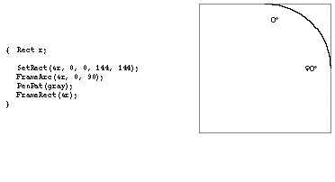

Imagine being able to build into your application the capability to draw freehand
curves. Imagine being able to save these curves so that they can be loaded into other
programs like MacDraw or printed using the LaserWriter. And imagine being given the
key to an abundant supply of previously defined curves to play with. Imagine no more .
. . this article reveals all.
QuickDraw is a heck of a fine drawing engine for the Macintosh, but it does have its
limitations. In particular, it supports a limited set of geometric primitives for
drawing: lines, rectangles, rounded- corner rectangles, ovals, arcs, and polygons (see
Figure 1). If you want your application to provide the capability of drawing contours
consisting of curves and straight lines, you're out of luck.
Sure, you can use the arc primitive to draw a curve, but if you want to connect the
curve to anything, you've got a problem. An arc represents a segment of an ellipse and
is specified by a bounding rectangle (defining the ellipse) and start and stop angles
(see Figure 2). Because an arc is not specified by starting and ending points, it's hard
to know the exact points where QuickDraw will begin and end drawing the arc. Thus,
the arc does not lend itself to being combined with other arcs or lines.
A more useful curve primitive would be one that describes its start and end positions
as points. The quadratic BÉzier is just such a curve. Applications such as MacDraw®
use this type of curve to allow the drawing of freehand curves, and the Macintosh itself
uses this type of curve in an internal procedure to describe TrueType fonts.
In this article we give you the lowdown on the quadratic BÉzier. We show the coding
and the data structures used by programs like MacDraw to draw this kind of curve, and
we show how your application can interchange data about this kind of curve with
MacDraw and with devices equipped with a PostScript® interpreter. And since the
quadratic BÉzier happens to be the same curve that TrueType uses (in combination
with other shapes) to draw outline fonts, we show how to extract curve data from
TrueType fonts.
Figure 1 QuickDraw's Geometric Primitives
The quadratic BÉzier has a couple of properties that make it useful as a basis for
drawing curves in QuickDraw. First, it can be rotated easily by changing just the
starting, ending, and middle points and not the underlying equation itself. Second, it
can easily be subdivided into any number of shorter curves that become flatter and
flatter, until in effect it can be drawn with a series of straight lines. Indeed, the basic
technique for drawing a curve using the existing QuickDraw primitives is by
subdividing the curve into a series of line segments. If you're interested in the
mathematics behind this, see "Parametric Equations, Anyone?"
This section begins by showing sample C code that implements the subdivision
algorithm that produces a curve. We then move on to consider how to produce a
combination of curves and straight lines, known in the lingo as apath . Then we talk
about how to combine paths to produce shapes. Note that for a curve, as for every
geometric primitive in QuickDraw, you always have two options: you can either frame
it or fill it. We show you how to do the framing; you can do the filling using the call
FillPoly or PaintPoly.

Figure 2 How an Arc Is Specified in QuickDraw
FRAMING A CURVE
The code that implements the subdivision algorithm to produce a curve takes a value
for the number of times the curve should be subdivided before it's drawn as straight
lines. This number can be dynamically computed based on the size of the curve and the
quality-versus-speed trade-off the application wants to make. The code uses
fixed-point coordinates to maintain high precision during the subdivisions.
To begin, let's define a few macros to help us use fixed-point coordinates in an
integer-based graphics system.
#define FR(x) ((x) + 0x8000 >> 16)
#define ff(x) ((long)(x) << 16)
#define fmoveto(x,y) MoveTo(FR(x), FR(y))
#define flineto(x,y) LineTo(FR(x), FR(y))
#define AVE(a,b) (((a) + (b)) / 2)
FR The same as FixRound: takes a Fixed and makes it a short.
ff The reverse of FixRound: takes a short and promotes it to a
Fixed.
fmoveto The same as MoveTo, but takes Fixed coordinates.
flineto The same as LineTo, but takes Fixed coordinates.
AVE Averages two numbers, either Fixed, short, or long.
To represent fixed-point coordinates, we define a struct called point. Note that this is
similar to QuickDraw's Point, but uses Fixed numbers instead of integers.
typedef struct {
Fixed x;
Fixed y;
} point;
To represent a curve, we need three points: a start point, a control point, and an
endpoint. (These correspond toa, b, and c in Figure 3.)
typedef struct {
point start;
point control;
point end;
} curve;
The function FrameCurve (below) draws a quadratic BÉzier using subdivision. If the
level for the FrameCurve routine is 0, a LineTo (using flineto) operation is
performed; otherwise, the curve is subdivided and FrameCurve is called recursively,
once for the left half of the curve and once for the right. FrameCurve assumes the
caller has already called fmoveto on the start point of the curve. The second routine,
ExampleCurve, calls FrameCurve requesting four levels of subdividing. Thus, the final
curve consists of 2^4, or 16, lines. It's shown in Figure 5.
Figure 5 The Curve Drawn by ExampleCurve
void FrameCurve(curve *cur, int level)
{
if (level)
{ curve left, right;
left.start = cur->start;
left.control.x = AVE(cur->start.x, cur->control.x);
left.control.y = AVE(cur->start.y, cur->control.y);
right.control.x = AVE(cur->control.x, cur->end.x);
right.control.y = AVE(cur->control.y, cur->end.y);
left.end.x = right.start.x = AVE(left.control.x,
right.control.x);
left.end.y = right.start.y = AVE(left.control.y,
right.control.y);
right.end = cur->end;
FrameCurve(&left, level-1);
FrameCurve(&right, level-1);
}
else
flineto(cur->end.x, cur->end.y);
}
void ExampleCurve()
{
static curve myCurve = {ff(0), ff(0), ff(100), ff(100), ff(100),
ff(0)};
fmoveto(myCurve.start.x, myCurve.start.y);
FrameCurve(&myCurve, 4);
}
FRAMING A PATH
Drawing contours such as font outlines requires drawing a combination of straight
lines and curves. Such a combination is known as apath . A path is defined by the
following data structure:
typedef struct {
long vectors; /* The number of points in the path. */
long controlBits[anyNumber];
point vector[anyNumber]; /* The points. */
} path;
A path is similar to a polygon except that it has a set of control bits that determine
whether each point is on or off the curve. There's one control bit for each point,
beginning with the most significant bit for point 0. If the bit is set, the corresponding
point is an off-curve point and therefore the control point for a curve. If the bit is
clear, the corresponding point is an on-curve point and therefore an endpoint for
either a line segment or a curve segment. Two consecutive on-curve points form a
straight line.
Here's a routine that takes an index and the control bits and returns TRUE (nonzero)
if the point is on the curve:
Boolean OnCurve(long *bits, long index)
{
bits += index >> 5; /* Skip to the appropriate long. */
index &= 31; /* Mask to get index into current long. */
return (*bits & (0x80000000 >> index)) == 0;
}
Two consecutive off-curve points imply an on-curve point at their midpoint, as
shown in Figure 6. This path consists of two curve segments. The first is defined bya,
b, (b + c ) / 2 and the second by (b + c ) / 2,c, d.
This ability to store a series of off-curve points allows a path to describe an
arbitrarily complex shape without having to store unneeded intermediate points.
However, this is just a storage nicety. When we draw the path, we need it broken down
into a series of line and curve segments. This is done with an iterator function called
NextPathSegment. It's called continuously, each time filling a record that is either a
line segment or a curve segment, until it returns FALSE.
Figure 6 On-Curve Point Implied by Two Off-Curve Points
typedef struct {
int isLine;
curve c;
/* Private. */
long index;
long ep;
long *bits;
point *p;
} pathWalker;
void InitPathWalker(pathWalker *w, path *aPath)
{
w->index = 0;
w->ep = aPath->vectors - 1;
w->bits = aPath->controlBits;
/* Skip past the control bits to point to the first point. */
w->p = (point *)(w->bits + (aPath->vectors + 31 >> 5));
}
int NextPathSegment(pathWalker *w)
{
long prevIndex, nextIndex;
if (w->index == 0) /* 0 means this is the first segment. */
{ if (OnCurve(w->bits, w->ep))
w->c.start = w->p[w->ep];
else
{ if (OnCurve(w->bits,0))
{ w->c.start = w->p[0];
w->index = 1;
}
else /* Start at an implied on-curve point. */
{ w->c.start.x = AVE(w->p[0].x, w->p[w->ep].x);
w->c.start.y = AVE(w->p[0].y, w->p[w->ep].y);
}
}
}
else /* Start where we previously left off. */
w->c.start = w->c.end;
NEXT_SEGMENT:
/* Compute the point index before and after the current one.
* This wraps around, since we assume the contour is closed. */
prevIndex = w->index == 0 ? w->ep : w->index - 1;
nextIndex = w->index == w->ep ? 0 : w->index + 1;
if (OnCurve(w->bits, w->index))
{ if (OnCurve(w->bits, prevIndex))
{ w->isLine = true; /* This means we have a line. */
w->c.end = w->p[w->index];
}
else if (w->index++ <= w->ep)
goto NEXT_SEGMENT;
}
else
{ w->isLine = false; /* This means we have a curve. */
w->c.control = w->p[w->index];
if (OnCurve(w->bits, nextIndex))
w->c.end = w->p[nextIndex];
else
{ w->c.end.x = AVE(w->p[w->index].x, w->p[nextIndex].x);
w->c.end.y = AVE(w->p[w->index].y, w->p[nextIndex].y);
}
}
return w->index++ <= w->ep;
/* Return TRUE if there are still more segments. */
}
The FramePath routine uses a pathWalker to traverse the path and draw it as it goes.
path *NextPath(path *aPath)
{
return (path *)((long *)aPath + 1 + (aPath->vectors + 31 >> 5) +
aPath->vectors * 2);
}
path *FramePath(path *cont)
{
pathWalker walker;
InitPathWalker(&walker, cont);
/* The first segment is special, since it calls fmoveto. */
if (NextPathSegment(&walker))
{ fmoveto(walker.c.start.x, walker.c.start.y);
if (walker.isLine)
flineto(walker.c.end.x, walker.c.end.y);
else
FrameCurve(&walker.c, kCurveLimit);
}
/* Keep looping until we run out of segments. */
while (NextPathSegment(&walker))
if (walker.isLine)
flineto(walker.c.end.x, walker.c.end.y);
else
FrameCurve(&walker.c, kCurveLimit);
/* Return the next path, used if this path is one of several
* within a series of paths. */
return NextPath(cont);
}
Now we can draw the path shown in Figure 6 that demonstrates consecutive off-curve
points.
void ExamplePath()
{
long myPath[] = {
5, /* Five points. */
0x60000000, /* The second and third are off-curve points. */
0,0,ff(10),0,ff(20),ff(10),ff(20),ff(20),0,ff(20) /* x,y data */
};
FramePath((path *)myPath);
}
FRAMING A SHAPE MADE OF SEVERAL PATHS
To describe a shape that contains several disjoint paths (such as an outline lettero ),
we use a simple data structure that's just a composite of several path structures:
typedef struct{
long contours;
path contour[anyNumber];
} paths;
Drawing such a shape (called in the vernacular apaths ) is straightforward:
typedef struct{
long contours;
path contour[anyNumber];
} paths;
Drawing such a shape (called in the vernacular a paths) is straightforward:
void FramePaths(paths *aPath)
{
long ctr = aPath->contours;
path *cont = aPath->contour;
while (ctr--)
cont = FramePath(cont);
}
The following code draws the paths shown in Figure 7.
void ExamplePaths()
{
long myPaths[] = {
5, /* Five contours. */
3, 0xE0000000, 0, ff(16), 0, ff(8), ff(14), ff(12),
3, 0xE0000000, ff(8), 0, ff(16), 0, ff(12), ff(14),
3, 0xE0000000, ff(24), ff(8), ff(24), ff(16), ff(10), ff(12),
3, 0xE0000000, ff(16), ff(24), ff(8), ff(24), ff(12), ff(10),
16, 0x11110000,
ff(8), 0, ff(12), ff(4), ff(16), 0, ff(16), ff(8),
ff(24), ff(8), ff(20), ff(12), ff(24), ff(16), ff(16),
ff(16), ff(16), ff(24), ff(12), ff(20), ff(8), ff(24),
ff(8), ff(16), 0, ff(16), ff(4), ff(12), 0, ff(8), ff(8),
ff(8)
};
FramePaths((paths *)myPaths);
}
Now that you know how to give your application the capability to draw all sorts of
curved shapes on the screen or on a QuickDraw printer, you might wonder whether
you can cut and paste these shapes into other applications or send them to a PostScript
printer. The answer is yes, thanks to picture comments. Picture comments
encapsulate non-QuickDraw graphics data that other "smarter-than- QuickDraw"
applications can interpret.
Figure 7 A Shape Made of Several Paths
Fortunately, there's a picture comment that takes quadratic BÉzier information
directly: PolySmooth. When this comment is encountered in a PICT it indicates that
the endpoints of the following lines are control points of a quadratic BÉzier.
Unfortunately, the comment assumes that all the control points lie off the curve. This
is a major drawback of the PolySmooth comment and forces us to break a path down
into curves and lines, rather than allowing us to put an entire path in at once.
When a picture interpreter (such as the LaserWriter driver) sees a PolySmooth
picture comment, it interprets the following points (put in the picture with a LineTo
opcode) as off-curve control points. Since DrawPicture ignores picture comments
completely, the clipping rectangle is set to empty so that no drawing will occur. The
picture interpreter now has the control points and can render the curve however it
sees fit.
To save a path in a picture, we start with the PolyBegin picture comment. This
comment indicates that a special polygon follows. If the path is closed, we add the
picPlyClo comment. Then we set the clipping to empty so that DrawPicture will not
render the following data. Next we add the PolySmooth comment, followed by the
control points.
When the whole polygon is in the picture, we restore the clipping to its previous state
and add the PolyIgnore picture comment. Anyone reading picture comments will know
to ignore the following QuickDraw polygon. DrawPicture, which ignores all picture
comments and skips over the smooth polygon since the lines are all clipped out, will
draw the polygon just as it should.
Thus, we have something like the following (where an asterisk indicates a picture
comment):
Save the current clip
*PolyBegin
Set the clip to the empty rectangle to turn off drawing
*PolySmooth
Record the PostScript version of the curves (just the control points)
*PolyIgnore
Restore the original clip to turn drawing back on
Record the QuickDraw version of the curves (subdivided into short lines)
*PolyEnd
Since the PolySmooth picture comment allows only off-curve points, it's necessary to
break the path down into segments. This is done by the AddPathsToPict routine, which
calls AddSegmentToPict for each path fragment (either a single quadratic BÉzier or a
line). AddSegmentToPict copies two sets of points into the PICT, one that contains the
actual control points of the curve or line segment (for PostScript printing or pasting
into MacDraw) and another that is the QuickDraw rendering of the curve or line.
In AddSegmentToPict (below), cur is the current segment to be added; isLine is a
Boolean identifying whether the segment is a curve or a line segment; and delta
specifies an amount to offset the data when recording the PostScript version, to
account for the difference between PostScript's centered pen and QuickDraw's upper
left pen.
void AddSegmentToPict(curve *cur, point *delta, int isLine)
{
/* Real programs check errors. */
Handle verbHdl = NewHandle(1);
RgnHandle origClip = NewRgn();
Rect emptyRect = {0, 0, 0, 0};
**verbHdl = kPolyFrame;
GetClip(origClip);
PicComment(POLYBEGIN, 0, 0);
ClipRect(&emptyRect); /* This turns drawing off. */
PicComment(POLYSMOOTH, 2, verbHdl);
/* Record the endpoints for PostScript. */
fmoveto(cur->start.x + delta->x, cur->start.y + delta->y);
if (isLine)
flineto(cur->end.x + delta->x, cur->end.y + delta->y);
else
flineto(cur->control.x + delta->x,
cur->control.y + delta->y);
flineto(cur->end.x + delta->x, cur->end.y + delta->y);
PicComment(POLYIGNORE, 0, 0);
SetClip(origClip); /* This turns drawing back on. */
/* Record the lines for QuickDraw. */
fmoveto(cur->start.x, cur->start.y);
if (isLine)
flineto(cur->end.x, cur->end.y);
else
FrameCurve(cur, kCurveLimit);
PicComment(POLYEND, 0, 0);
DisposeRgn(origClip);
DisposHandle(verbHdl);
}
AddPathsToPict is relatively simple. It walks through each path, and each segment
within each path, and records the segments by calling AddSegmentToPict.
AddPathsToPict(paths *myPaths)
{
point penDelta;
long i;
path *cont;
/* Compute half the pen's thickness as a delta, since
* PostScript's pen is centered and QuickDraw's hangs
* to the right and down. */
penDelta.x = ff(thePort->pnSize.h) / 2;
penDelta.y = ff(thePort->pnSize.v) / 2;
/* Record the curve data. */
cont = myPaths->contour;
for (i = 0; i < myPaths->contours; i++)
{ pathWalker walker;
/* This loop looks a lot like FramePath. */
InitPathWalker(&walker, cont);
while (NextPathSegment(&walker))
AddSegmentToPict(&walker.c, &penDelta, walker.isLine);
cont = NextPath(cont);
}
}
A word about rounding: We've kept all our data in Fixed, even during the subdivision
process, up until calling LineTo; still, when we record the data into a PICT, we're
forced to throw away information since the PICT records only integer coordinates. The
upshot of this is that a given series of paths may draw much better in your application
than when it's been put into a PICT and pasted into another application.
Because TrueType uses the quadratic BÉzier as its curve primitive, as mentioned
earlier, the outlines in a TrueType font represent a rich source of curve data for
programmers. In fact, a program demonstrated at Apple's Worldwide Developers
Conference in May of this year uses TrueType fonts as a basis for turning text typed by
the user into outlines that can be rotated, filled, stretched and shrunk, and
transformed in other amusing ways. All it takes to produce such a program is to
convert TrueType data from its native storage structure into a paths data structure.
We show you how to do that here, and then discuss the sample program you'll find on
theDeveloper CD Series disc that draws outlines extracted from TrueType fonts.
CONVERTING THE DATA
For space reasons, the data for TrueType outlines is not stored in a paths data
structure but instead is compressed as byte deltas. Code provided on this
issue'sDeveloper CD Series disc fills out a glyph outline data structure given a
TrueType font and a glyph ID. The glyph outline data structure looks like this:
typedef struct {
long contourCount;
long pointCount;
point origin;
point advance;
short **endPoints; /* [contourCount] */
Byte **onCurve; /* [pointCount] */
Fixed **x; /* [pointCount] */
Fixed **y; /* [pointCount] */
} GlyphOutline;
A glyph outline is a bit less compact than a paths data structure, but contains enough
information to be converted into one. One difference from the paths data structure is
that in a path, if a control bit is set, the point is treated as an off-curve point. In a
glyph outline, if the onCurve byte is set, the point is treated as an on-curve point.
Another difference is that in a glyph outline, the points for all the contours are stored
contiguously, rather than separated into discrete path structures.
The utility function PackControlBits takes an array of bytes, each representing a
point, and packs them into a bit array, suitable for a path. It then returns a pointer to
the long after the last control long.
long *PackControlBits(long *p, Byte *onCurve, long count)
{
unsigned long mask = 0x80000000;
*p = 0;
while (count--)
{ if (!mask)
{ mask = 0x80000000;
*++p = 0;
}
if (!*onCurve++)
*p |= mask;
mask >>= 1;
}
return p + 1;
}
The function OutlineToPaths takes a glyph outline and returns a pointer to a path that
represents the outline. NewPtr is called, so when the application has finished using the
path it should call DisposePtr.
paths *OutlineToPaths(GlyphOutline *out)
{
long size, *p, *origP;
/* First compute how big the resulting path will be. */
size = sizeof(long); /* paths.contours */
{ long i, sp = 0;
for (i = 0; i < out->contourCount; i++)
{ long pts = (*out->endPoints)[i] - sp + 1;
size += sizeof(long); /* path.vectors */
size += (pts + 31 >> 5) << 2;
/* path.controlBits */
size += pts << 3; /* path.vector[] */
sp = (*out->endPoints)[i] + 1;
}
}
/* Now allocate the paths. */
origP = p = (long *)NewPtr(size);
/* Real programs check errors. */
/* Record the number of contours. */
*p++ = out->contourCount;
{ long i, sp = 0;
Fixed *x = *out->x;
Fixed *y = *out->y;
short *ep = *out->endPoints;
Byte *onCurve = *out->onCurve;
/* For each contour, record the point count,
* record the control bits, then the points. */
for (i = 0; i < out->contourCount; i++)
{ long pts = *ep - sp + 1;
*p++ = pts;
p = PackControlBits(p, onCurve, pts);
onCurve += pts;
while (pts--)
{ *p++ = *x++;
*p++ = *y++;
}
sp = *ep++ + 1;
}
}
return (paths *)origP;
}
ABOUT OUR SAMPLE APPLICATION
The sample application QD Curves on theDeveloper CD Series disc uses paths to draw
the outlines of TrueType text. It can put the outlines onto the Clipboard so that they can
be pasted into another application for editing or printing. In addition, the application
uses some of the other TrueType access functions to build variable-length font and
style menus and display information about a font, such as its version number,
copyright notice, and trademark (see Figure 8).
To display a path, the application determines how large the path currently is and
scales it to fill the window. The utility functions OffsetPaths, ScalePaths, and
GetPathsBounds are used in positioning and scaling paths.
Figure 8Font Information Displayed by QD Curves
void OffsetPaths(paths* p, Fixed dx, Fixed dy)
{
long ctrs = p->contours;
path *aPath = p->contour;
while (ctrs--)
{ long pts = aPath->vectors;
/* Skip the control bits. */
Fixed *coord = (Fixed *)aPath + 1 + (pts + 31 >> 5);
/* Apply the offsets; remember, x comes before y. */
while (pts--)
{ *coord++ += dx;
*coord++ += dy;
}
/* The next path follows the end of the current path. */
aPath = (path *)coord;
}
}
void ScalePaths(paths *p, Fixed sx, Fixed sy)
{
long ctrs = p->contours;
path *aPath = p->contour;
/* Apply the scales; remember, x comes before y. */
while (ctrs--)
{ long pts = aPath->vectors;
/* Skip the control bits. */
Fixed *coord = (Fixed *)aPath + 1 + (pts + 31 >> 5);
while (pts--)
{ *coord = FixMul(*coord, sx);
coord++;
*coord = FixMul(*coord, sy);
coord++;
}
/* The next path follows the end of the current path. */
aPath = (path *)coord;
}
}
void GetPathsBounds(paths *p, Rect *r)
{
long ctr = p->contours;
path *cont = p->contour;
/* Begin with the minimum rectangle. */
r->left = r->top = 32767;
r->right = r->bottom = -32678;
while (ctr--)
{ long *bits = cont->controlBits;
/* Skip the control bits. */
long *coord =
(long *)(bits + (cont->vectors + 31 >> 5));
long pts = cont->vectors;
while (pts--)
{ short x = FR(*coord++);
short y = FR(*coord++);
if (x < r->left)
r->left = x;
else if (x > r->right)
r->right = x;
if (y < r->top)
r->top = y;
else if (y > r->bottom)
r->bottom = y;
}
/* The next path follows the end of the current path. */
cont = (path *)coord;
}
}
Note that what is returned is the bounds for the control points of the paths, not
necessarily the bounds of the actual paths being drawn (see Figure 9). That requires a
slightly more complex, though useful, function, which we leave to you as an exercise.
(Hint: Find thex and y extrema for the curve. To do this, find the local extrema int
by setting the derivative of the equation inx or y equal to 0, and solve fort. )
As part of its display options, the application will also mark the on-curve points in
the paths.
void MarkPaths(paths *aPath)
{
long ctr = aPath->contours;
path *cont = aPath->contour;
Point loc;
Rect r;
while (ctr--)
{ long *bits = cont->controlBits;
long *coord = (long *)(bits + (cont->vectors + 31 >> 5));
long ptIndex;
for (ptIndex = 0; ptIndex < cont->vectors; ptIndex++)
{ r.left = FR(*coord++) - 2;
r.top = FR(*coord++) - 2;
r.right = r.left + 5;
r.bottom = r.top + 5;
if (OnCurve(bits, ptIndex))
PaintOval(&r);
#ifdef mark_off_curve
else
FrameOval(&r);
#endif
}
cont = (path *)coord;
}
}
Figure 9 Bounds of the Control Points Versus Bounds of the Curve
This function to mark the control points of a path is a good framework for adding
curve editing. We leave that to you also, and suggest that besides simple
point-by-point direct mouse editing, you consider providing the capability to do the
following:
This article has given you the tools to do some fancy work with curves in your
applications. We've given you routines for drawing curves and paths using QuickDraw,
discussed how to save these in PICTs so that they can be loaded into other programs like
MacDraw or printed using the LaserWriter, and shown how to extract paths from
TrueType fonts, giving you an abundant supply of path data. Now it's up to you to play
off this knowledge by adding curve editing, text rotation, and other means of
transforming your new freehand curves.
Though you can draw curves without understanding the mathematics behind the
operation, some people find this kind of thing interesting. This explanation is for those
people (you know who you are).
A quadratic BÉzier (or parabola) can be defined by the parametric equation
f (t ) = a (1 - t )2 + 2bt (1 - t ) + ct 2
where t is a scalar and a, b, and c are points.
This parametric formulation has the advantage of being rotationally independent: since
t is the independent variable, and not x or y , there is no bias for curves that are
symmetric about the x- or y-axis. Thus, to rotate the curve, you only need to rotate a,
b, and c into their new positions, while the equation for the curve stays the same.
To better understand the equation, take a look at its geometric representation in Figure
3. You'll note there that as the curve is drawn from point a to point c , t varies from
0 to 1. The curve at a is tangential to the lineab, and the curve at c is tangential to
the line bc. Its maximum displacement from the line that could be drawn from a to c
is reached at point q , where t is 0.5. In addition, the curve at q is parallel to the
(imagined) line ac .
Perhaps the most useful property of the curve in this form is the easy way it can be
decomposed into a pair of smaller curves, each of the same form. This is called
subdivision and is the basis for drawing curves in QuickDraw.
Suppose we subdivide the curve at point q , as shown in Figure 4. The point q is
q = f ( 0.5) = (a + 2b + c ) / 4
The tangent (that is, the first derivative) of the curve at q is parallel to the line ac.
f' (t ) = -2a (1 - t ) + 2b (1 - 2t ) + 2ct
f' (0.5) = c - a
The line from the point b' = (a + b ) / 2 to q is tangential to the curve at q .
q - b' =
(a + 2b + c ) / 4 - (a + b ) / 2 =
(a + 2b + c - 2a - 2b ) / 4 =
(c - a ) / 4
By symmetry, the same holds for b'' = (b + c ) / 2.
Thus, the formulas for the two curves that make up the left and right halves of the
original curve are as follows:
Left: a' = a
b' = (a + b ) / 2
c' = (a + 2b + c ) / 4
Right: a'' = (a + 2b + c ) / 4
b'' = (b + c ) / 2
c'' = c The equations for the new points are especially nice, since the arithmetic can
be performed with only shifts and adds, making it very efficient.
Notice in Figure 4 that each of the resulting smaller curves is flatter than the original
curve, by a factor of 4. This means that the distance from the midpoint of the curve to
the midpoint of the straight line drawn from the start point to the endpoint is reduced
by 4. Thus, if the curve is subdivided enough times, drawing the curve will be
equivalent to drawing a line from the start point to the endpoint for each of the little
curves. This is the basis for drawing the curve in QuickDraw.
Figure 3 Geometric Representation of Our BÉzier
Figure 4 Our BÉzier, Subdivided
MIKE REED AND KONSTANTIN OTHMER have become such regular contributors
to develop that they scarcely need introduction. Still, we've just discovered something
new about them: they dabble in doggerel. Consider this sample:
Late into the night, by the glow of a candle,
Two men are found working on mischief and scandal.
Their mice are a-clicking, their keyboards in motion,
They're working on something of mythic proportion.
We move closer in, to get a good look,
And notice they're writing a get-rich-quick book.
We wonder what topic could hold their attention
And keep them from working on some new invention.
Their title reveals what the work will envelop--
How to Get Rich: Just Write for develop. *
For an explanation of the Fixed data type, see Inside Macintosh Volume I,
Chapters 3 and 16. *
For more information about picture comments, see Technical Note #91,
"Optimizing for the LaserWriter--Picture Comments." This tech note explains how
picture comments work and documents a number of standard picture comments
supported by the LaserWriter printer driver.*
Complete information on the TrueType format is provided in The TrueType
Font Format Specification , available from APDA (#M0825LL/A).*
THANKS TO OUR TECHNICAL REVIEWERS Pete "Luke" Alexander, Guillermo
Ortiz, Sean Parent*